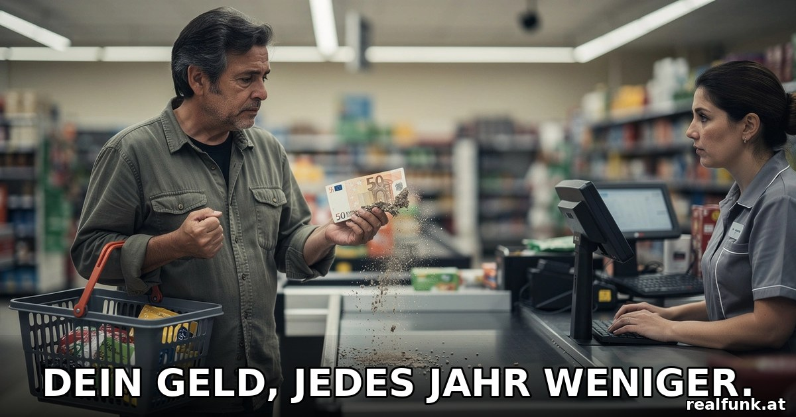

Wie die Inflation uns ärmer macht

Am Monatsende bleibt weniger übrig als früher, obwohl man nicht mehr ausgibt. Das ist kein Pech und keine Naturgewalt, sondern das Ergebnis von Politik, über die kaum jemand offen spricht.
Jeder spürt es an der Kassa, an der Zapfsäule, auf der Stromrechnung: Das Geld reicht kürzer. Trotzdem klingt die offizielle Inflationsrate meist harmlos, und in den großen Nachrichten läuft sie als Randnotiz. Warum haben wir weniger, und warum redet kaum jemand darüber? Beides hat denselben Grund: Die Zahl, die Entwarnung gibt, mittelt die eigentliche Wucht weg, und die Verantwortlichen sitzen dort, wo man am wenigsten hinschaut.
Die Zahl, die täuscht
Wenn die Statistik eine Teuerung von, sagen wir, drei Prozent meldet, ist das ein Durchschnitt über hunderte Waren und Dienstleistungen, von Mieten über Pauschalreisen bis zur Elektronik. Für den Alltag zählt aber vor allem, was man ständig braucht: Energie und Lebensmittel. Und die stiegen weit stärker. Auf dem Höhepunkt im Oktober 2022 lag die Gesamtinflation im Euroraum laut Eurostat bei 10,6 Prozent, die Energiepreise aber bei 41,9 Prozent, Lebensmittel samt Alkohol und Tabak bei 13,1 Prozent. In Österreich betrug die Teuerung im Jahresschnitt 2022 rund 8,5 Prozent, in einzelnen Monaten deutlich mehr, Energie zeitweise über 50 Prozent. Wer viel für Strom, Heizen und Essen ausgibt, spürte also ein Vielfaches der Schlagzeilenzahl.
Noch deutlicher wird es, wenn man die Jahre zusammenzählt. Auf den Schock von 2022 folgten in Österreich laut Statistik Austria rund 7,8 Prozent im Jahr 2023, 2,9 Prozent 2024 und wieder 3,6 Prozent 2025. Auch 2026 sinkt die Rate nicht auf null, sondern liegt Monat für Monat zwischen 2,0 und 3,7 Prozent, zuletzt im Juni bei 3,2 Prozent. Das summiert sich brutal: Der Verbraucherpreisindex stand Ende 2025 bei rund 130 Punkten gegenüber 100 im Jahr 2020. Im Klartext kostet derselbe Warenkorb heute etwa 30 Prozent mehr als vor sechs Jahren. Kein einzelner Jahreswert zeigt diese Wucht, erst die Summe tut es. Und anders als oft behauptet war das nicht überall gleich: Österreich lag in diesen Jahren durchgehend über dem Euroraum-Durchschnitt, 2025 etwa bei 3,6 gegenüber 2,5 Prozent und damit höher als fast alle anderen Länder der Eurozone. Der Grund liegt großteils daheim: Als Ende 2024 die staatliche Strompreisbremse auslief, stieg allein der Strompreis 2025 um über 37 Prozent, dazu kamen teure Mieten und Dienstleistungen. Die europäische Teuerung war der Rahmen, die heimische Politik hat sie noch verstärkt.
Genau deshalb wirkt die offizielle Rate oft wie aus einer anderen Welt. Der Index ist nicht gefälscht, aber er glättet: Ein billigeres Fernsehgerät kann eine teurere Stromrechnung rechnerisch abfedern, obwohl niemand täglich einen Fernseher kauft und jeder täglich Strom braucht. Für ärmere Haushalte, die mehr für das Nötigste ausgeben, ist die Belastung höher als der Schnitt. Die gefühlte Inflation ist keine Einbildung, sie ist die Inflation des eigenen Warenkorbs.
Warum die Preise stiegen
Der Preisschub seit 2020 war zu großen Teilen hausgemacht, und die europäische Politik trägt daran erhebliche Mitschuld. Zwei Dinge kamen zusammen. Erstens die Geldschwemme: Die EZB kaufte über Programme wie PEPP im großen Stil Anleihen und hielt die Zinsen bei null, während die Staaten billionenschwere Hilfspakete auflegten. Zweitens eine Energiepolitik, die Europa erst verwundbar machte. Jahrelang wettete vor allem Deutschland auf billiges russisches Gas und schaltete zugleich funktionierende Kernkraftwerke ab.
Als Russland 2022 nach dem Überfall auf die Ukraine die Lieferungen drosselte, traf der Energiepreis-Schock einen Kontinent, der sich selbst abhängig gemacht hatte. Dazu kommt der teurere Alltag durch immer neue Auflagen und die CO2-Bepreisung. Und die EZB, selbst eine EU-Institution, reagierte spät: Lange nannte sie die Teuerung „vorübergehend", ehe sie hektisch gegensteuerte. Die Rechnung für all das zahlten die Haushalte. Dass zusätzliche Kaufkraft auf ein politisch verknapptes Angebot traf, bestreitet kaum jemand.
Reden verboten, zahlen erlaubt
Besonders widersprüchlich ist der Umgang mit Russland. Jedes Gespräch mit Moskau wird verweigert, während weiter Milliarden an ein Kiew fließen, das ein Korruptionsskandal nach dem anderen erschüttert, zuletzt rund 100 Millionen Dollar Schmiergeld im Staatskonzern Energoatom, mit Spuren bis ins Umfeld des Präsidenten. Zugleich laufen die EU-Beitrittsverhandlungen weiter. Bei den gesprengten Nord-Stream-Pipelines beschuldigt die deutsche Bundesanwaltschaft seit Juli einen ukrainischen Offizier, der im staatlichen Auftrag gehandelt haben soll; Kiew bestreitet es. Und russisches Gas kauft die EU längst weiter, nur teurer: 2025 flossen laut Branchendaten rund sieben Milliarden Euro für russisches Flüssiggas, während billiges Pipelinegas durch teures Schiffs-LNG ersetzt wurde. Der Bürger zahlt das Vielfache, damit die Politik sauberer aussieht, als sie ist.
Zwei Prozent sind kein Naturgesetz
Bemerkenswert ist, wie selbstverständlich ein bisschen Inflation als naturgegeben gilt. Ist sie nicht. Die EZB verfolgt ausdrücklich ein Ziel von zwei Prozent Teuerung pro Jahr. Zwei Prozent klingen nach wenig, halbieren die Kaufkraft eines gesparten Euros aber in gut 35 Jahren. Es gibt seriöse Argumente für ein kleines positives Ziel, etwa Abstand zur gefährlichen Deflation. Aber es ist eine politische Setzung von Menschen, kein Gesetz der Physik. Wer spart, zahlt dafür.
Woher das Geld kommt
Um zu verstehen, warum das System auf steigende Preise angelegt ist, hilft ein Blick darauf, wie Geld überhaupt entsteht. Anders als viele glauben, druckt nicht in erster Linie der Staat das Geld. Den weitaus größten Teil schöpfen Geschäftsbanken selbst, indem sie Kredite vergeben: Mit dem Kredit entsteht neues Guthaben auf dem Konto, faktisch aus dem Nichts. Das ist keine Verschwörungstheorie, die Bank of England hat es in einem vielzitierten Papier („Money creation in the modern economy", 2014) selbst so beschrieben. Weil fast alles Geld als Schuld in die Welt kommt und mit Zins zurückgezahlt werden muss, ist dem System ein Drang zu ständigem Wachstum eingebaut. Kritiker nennen diesen Zwang polemisch ein Schneeballsystem; Ökonomen widersprechen dem Bild, weil Geld laufend neu geschaffen und getilgt wird. Der Kern bleibt unstrittig: Unser Geld ist Schuld, und Schuld verlangt Zins.
Und wem gehört die Notenbank? Hier kursieren viele Halbwahrheiten. Die EZB ist eine öffentliche EU-Institution, die Bank of England wurde 1946 verstaatlicht. Die US-Notenbank Fed dagegen ist ein Zwitter: Ihre regionalen Reserve-Banken gehören formal den privaten Mitgliedsbanken, die dort Anteile halten, während das oberste Gremium eine staatliche Behörde ist und die Gewinne an das Finanzministerium fließen. Die eigentliche Frage lautet also nicht „privat oder staatlich", sondern wie weit eine Institution, die über den Geldwert von Millionen entscheidet, der demokratischen Kontrolle entzogen ist. Diese Unabhängigkeit wird gern als Tugend verkauft. Sie ist zugleich Macht ohne Wahlzettel.